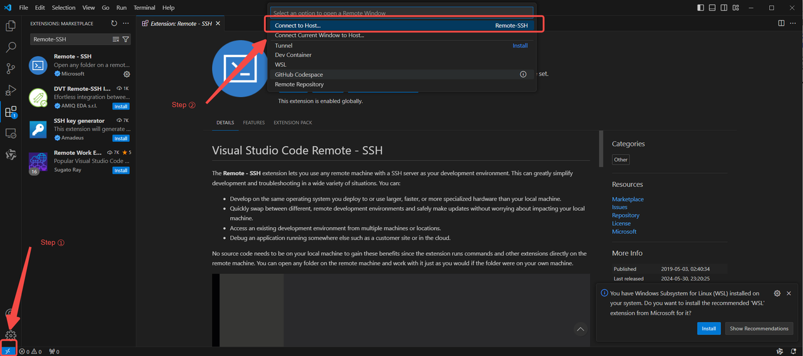

<!DOCTYPE html>


<html lang="zh-CN">


<head>
  <meta name="baidu-site-verification" content="codeva-NSg7ynviLa" />
  <meta charset="utf-8" />
    
  <meta name="viewport" content="width=device-width, initial-scale=1, maximum-scale=1" />
  <title>
    scnet购买并使用gpu资源 |  
  </title>
  <meta name="generator" content="hexo-theme-ayer">
  
  <link rel="shortcut icon" href="/images/mojie.jpg" />
  
  
<link rel="stylesheet" href="/dist/main.css">

  <link rel="stylesheet" href="https://cdn.jsdelivr.net/gh/Shen-Yu/cdn/css/remixicon.min.css">
  
<link rel="stylesheet" href="/css/custom.css">

  
  <script src="https://cdn.jsdelivr.net/npm/pace-js@1.0.2/pace.min.js"></script>
  
  

  

<link rel="alternate" href="/atom.xml" title="null" type="application/atom+xml">
</head>

</html>

<body>
  <div id="app">
    
      
    <main class="content on">
      <section class="outer">
  <article
  id="post-scnet购买并使用gpu资源"
  class="article article-type-post"
  itemscope
  itemprop="blogPost"
  data-scroll-reveal
>
  <div class="article-inner">
    
    <header class="article-header">
       
<h1 class="article-title sea-center" style="border-left:0" itemprop="name">
  scnet购买并使用gpu资源
</h1>
 

    </header>
     
    <div class="article-meta">
      <a href="/posts/8eefb5de/" class="article-date">
  <time datetime="2026-11-10T07:12:23.000Z" itemprop="datePublished">2026-11-10</time>
</a>   
<div class="word_count">
    <span class="post-time">
        <span class="post-meta-item-icon">
            <i class="ri-quill-pen-line"></i>
            <span class="post-meta-item-text"> 字数统计:</span>
            <span class="post-count">4.6k</span>
        </span>
    </span>

    <span class="post-time">
        &nbsp; | &nbsp;
        <span class="post-meta-item-icon">
            <i class="ri-book-open-line"></i>
            <span class="post-meta-item-text"> 阅读时长≈</span>
            <span class="post-count">17 分钟</span>
        </span>
    </span>
</div>
 
    </div>
      
    <div class="tocbot"></div>


  
    <div class="article-entry" itemprop="articleBody">
       
  <p>网页1是普通说明。</p>
<p>网页2是最佳实践。</p>
<p>网页3是收费说明。</p>
<p>网页4是保存镜像。</p>
<span id="more"></span>
<h1 id="notebook-实例是什么">🤔 Notebook 实例是什么？</h1>
<p>你可以把 <strong>Notebook 实例</strong> 理解为一个<strong>为你量身定制的、即开即用的云端开发电脑</strong>。</p>
<ul>
<li><strong>它不是一台真实的物理服务器</strong>，而是基于云计算技术，从超算中心庞大的资源池中，为你<strong>动态划分出的一块独立计算环境</strong>。</li>
<li>它<strong>预装了</strong>操作系统、CUDA、Python 以及 PyTorch 等深度学习框架，让你能跳过复杂的环境配置，直接开始开发。</li>
<li>它的核心特点是<strong>按需使用、按量计费</strong>。当你创建并启动一个实例，就相当于“开机”；当你关闭它，这块计算资源就会被释放，你也停止付费。</li>
<li>因此，你之前看到的 <code>bash</code> 命令和 <code>root</code> 提示符，正是你进入了这个<strong>容器内部操作系统</strong>的证明。</li>
</ul>
<h3 id="为什么普通用户会有-rootprivate_data-目录">🗂️ 为什么普通用户会有 <code>/root/private_data/</code> 目录？</h3>
<p>这正是 SCNet 平台为了让你使用更便利而做的特殊设计。理解这一点，需要从两个层面来看：</p>
<ol type="1">
<li><p><strong>容器内的“root” ≠ 物理机的“root”</strong>
虽然你在容器里看到的是 <code>root</code> 用户，但这只是一个<strong>虚拟的、隔离的环境</strong>，权限被严格限制在容器内部，并不能对物理宿主机产生任何影响。所以，即使显示为 <code>root</code>，也无需担心安全问题。</p></li>
<li><p><strong><code>/root/private_data/</code> 是你的专属“云盘”</strong>
这个目录是平台为你<strong>专门挂载</strong>的一个<strong>持久化存储空间</strong>。它的作用就像一个“云盘”：</p>
<ul>
<li><strong>持久保存</strong>：存放在这里的代码、数据集、模型，<strong>不会因为 Notebook 实例的关闭或重启而丢失</strong>。</li>
<li><strong>个人专属</strong>：这是你的私有空间，其他用户无法访问。</li>
<li><strong>平台推荐</strong>：SCNet 的官方文档和教程都明确建议，将所有个人数据都放在这个目录下。</li>
</ul></li>
</ol>
<h3 id="总结">💎 总结</h3>
<p>总而言之，你在 SCNet 上启动的 Notebook 实例，是一个运行在云端的、<strong>临时的</strong>、<strong>专属的</strong>开发容器。而你看到的 <code>/root/private_data/</code> 目录，正是连接这个临时容器与你<strong>永久个人存储空间</strong>的桥梁，确保你的工作成果和宝贵数据不会因为实例的关闭而消失。</p>
<p>所以，请放心地将你的代码和数据放在 <code>/root/private_data/</code> 目录下，这是平台设计的最佳实践。</p>
<h1 id="数据放哪">数据放哪？</h1>
<p>Notebook 容器内几个目录性质不一样：</p>
<table>
<colgroup>
<col style="width: 43%" />
<col style="width: 36%" />
<col style="width: 20%" />
</colgroup>
<thead>
<tr>
<th>路径</th>
<th>性质</th>
<th>开关机后还在吗</th>
</tr>
</thead>
<tbody>
<tr>
<td><code>/</code>（系统盘）</td>
<td>装依赖、小代码，随「保存镜像」走</td>
<td>不存镜像就丢</td>
</tr>
<tr>
<td><code>/root/private_data</code>（挂 <code>/public/home/&lt;user&gt;</code>）</td>
<td><strong>个人数据、数据集、模型权重、训练结果</strong></td>
<td>✅ 不受开关机/存镜像影响</td>
</tr>
<tr>
<td><code>/root/group_data</code></td>
<td>团队共享</td>
<td>✅ 持久</td>
</tr>
<tr>
<td><code>/root/public_data</code></td>
<td>平台公开只读</td>
<td>别写</td>
</tr>
</tbody>
</table>
<p>实操里进 Terminal 先 <code>cd private_data &amp;&amp; mkdir -p my/train &amp;&amp; cd my/train</code>，把数据集、ipynb、ckpt 都往这塞。系统盘默认 50GB，private_data 走的是你家目录配额，存大模型权重优先放这；<code>/tmp</code>、<code>~/scratch</code> 是临时区会清理，别放成果。</p>
<h2 id="关-notebook-后数据还在吗分数据和环境两层">关 Notebook 后数据还在吗：分「数据」和「环境」两层</h2>
<p><strong>只要把文件放在正确的目录，关机后数据就不会丢失，可以随时恢复。</strong></p>
<ul>
<li><strong>数据持久化</strong>：存放在 <strong>/root/private_data/</strong> 目录下的所有文件（代码、数据集、模型等），在Notebook实例关闭后都会被<strong>持久化保存</strong>。当你再次启动同一个Notebook实例时，这些文件会<strong>自动恢复</strong>，继续使用。</li>
<li><strong>环境与配置的保存（进阶）</strong>：除了数据，如果你还想保留安装的软件包、系统配置等整个开发环境，可以使用平台的 <strong>“保存镜像”</strong> 功能。这会将当前整个环境打包成一个镜像。下次创建Notebook时，直接选择这个自定义镜像，就能得到一个完全一致的环境。
<ul>
<li><strong>注意</strong>：保存镜像时，单层镜像数据量<strong>不得超过15 GiB</strong>。因此，大文件（如数据集）应始终放在 <code>/root/private_data/</code> 中，而不是打包进镜像。</li>
</ul></li>
</ul>
<h1 id="环境装在哪">环境装在哪？</h1>
<h3 id="环境装在哪-推荐装在-rootprivate_data-里">💻 环境装在哪？—— 推荐装在 <code>/root/private_data</code> 里</h3>
<p>虽然可以把 Miniconda 这类环境装在用户家目录（<code>~/</code>）下，但<strong>更推荐的做法是把整个开发环境（包括 Miniconda、Python 包等）都安装在 <code>/root/private_data</code> 目录下</strong>。</p>
<p>原因如下：</p>
<ul>
<li><strong>持久化存储</strong>：<code>/root/private_data</code> 是平台为每个用户分配的<strong>持久化个人存储空间</strong>。Notebook 实例关机后，该目录下的所有文件（包括你安装的 Conda、Python 环境）都会被保留，下次开机可以直接使用，无需重新配置。</li>
<li><strong>环境备份与复用</strong>：将环境安装在 <code>/root/private_data</code> 后，你可以使用平台的 <strong>“保存镜像”</strong> 功能，将整个环境（包括系统配置和已安装的包）打包成一个镜像。这样不仅能方便地恢复环境，还能用于团队协作或在其他节点上复现。</li>
</ul>
<blockquote>
<p><strong>注意</strong>：保存镜像时，单层镜像数据量<strong>不得超过 15 GiB</strong>。因此，像数据集这样的大文件应始终放在 <code>/root/private_data</code> 中，<strong>不要</strong>打包进镜像。</p>
</blockquote>
<p><strong>具体操作步骤如下：</strong></p>
<ol type="1">
<li><strong>启动 Notebook 实例</strong>，进入 JupyterLab 界面。</li>
<li>打开一个 <strong>Terminal</strong>（终端）。</li>
<li>在终端中，切换到持久化目录：
<figure class="highlight bash"><table><tr><td class="gutter"><pre><span class="line">1</span><br></pre></td><td class="code"><pre><span class="line"><span class="built_in">cd</span> /root/private_data</span><br></pre></td></tr></table></figure></li>
<li>在此目录下，下载并安装 Miniconda：
<figure class="highlight bash"><table><tr><td class="gutter"><pre><span class="line">1</span><br><span class="line">2</span><br><span class="line">3</span><br><span class="line">4</span><br><span class="line">5</span><br><span class="line">6</span><br></pre></td><td class="code"><pre><span class="line"><span class="comment"># 下载 Miniconda 安装脚本（请确保版本与你的系统兼容）</span></span><br><span class="line">wget https://repo.anaconda.com/miniconda/Miniconda3-py37_4.9.2-Linux-x86_64.sh</span><br><span class="line"><span class="comment"># 运行安装，指定安装路径为当前目录下的 miniconda3 文件夹</span></span><br><span class="line">bash Miniconda3-py37_4.9.2-Linux-x86_64.sh -b -p /root/private_data/miniconda3</span><br><span class="line"><span class="comment"># 删除安装脚本（可选）</span></span><br><span class="line"><span class="built_in">rm</span> Miniconda3-py37_4.9.2-Linux-x86_64.sh</span><br></pre></td></tr></table></figure></li>
<li><strong>初始化 Conda</strong>，以便在新终端中直接使用 <code>conda</code> 命令：
<figure class="highlight bash"><table><tr><td class="gutter"><pre><span class="line">1</span><br><span class="line">2</span><br></pre></td><td class="code"><pre><span class="line">/root/private_data/miniconda3/bin/conda init</span><br><span class="line"><span class="built_in">source</span> ~/.bashrc</span><br></pre></td></tr></table></figure></li>
<li>之后，你创建的所有虚拟环境和安装的 Python 包，都会默认存放在 <code>/root/private_data/miniconda3</code> 下，实现持久化。</li>
</ol>
<hr />
<h3 id="数据怎么移到-rootprivate_data-使用-mv-或-cp-命令">📂 数据怎么移到 <code>/root/private_data</code>？—— 使用 <code>mv</code> 或 <code>cp</code> 命令</h3>
<p>如果你已经把数据上传到了家目录（<code>~/</code>），可以轻松地将其移动到 <code>/root/private_data</code> 目录。</p>
<ol type="1">
<li><p>在 JupyterLab 中打开 <strong>Terminal</strong>。</p></li>
<li><p>使用 <code>mv</code>（移动）或 <code>cp</code>（复制）命令。</p>
<p><strong>例如</strong>，假设你的数据文件夹叫 <code>my_data</code>，位于家目录，想移动到 <code>/root/private_data</code>：
<figure class="highlight bash"><table><tr><td class="gutter"><pre><span class="line">1</span><br></pre></td><td class="code"><pre><span class="line"><span class="built_in">mv</span> ~/my_data /root/private_data/</span><br></pre></td></tr></table></figure>
&gt; <strong>注意</strong>：<code>mv</code> 命令会直接移动文件，原路径将不再有该文件。</p></li>
<li><p><strong>（重要）修改文件权限</strong>：移动后，文件的所有者可能变为 <code>root</code>，导致后续操作权限不足。你需要将文件所有者修改为自己的计算用户名：
<figure class="highlight bash"><table><tr><td class="gutter"><pre><span class="line">1</span><br><span class="line">2</span><br></pre></td><td class="code"><pre><span class="line"><span class="comment"># 将 user_name 替换为你的实际计算用户名</span></span><br><span class="line"><span class="built_in">chown</span> -R user_name:user_name /root/private_data/my_data</span><br></pre></td></tr></table></figure>
&gt; 如果不确定自己的用户名，可以在终端输入 <code>whoami</code> 命令查看。</p></li>
</ol>
<h3 id="总结与建议">💎 总结与建议</h3>
<ul>
<li><strong>环境安装</strong>：<strong>务必安装在 <code>/root/private_data</code> 目录下</strong>，以实现持久化。这样关机重启后，你的 Conda 环境和所有已安装的包都还在。</li>
<li><strong>数据存放</strong>：<strong>所有代码、数据集、模型文件等都应放在 <code>/root/private_data</code></strong> 下。</li>
<li><strong>数据迁移</strong>：使用 <code>mv</code> 或 <code>cp</code> 命令将数据从家目录移动到 <code>/root/private_data</code>，<strong>完成后记得用 <code>chown</code> 命令修改文件所有者</strong>。</li>
<li><strong>环境固化</strong>：环境配置完成后，建议使用平台的 <strong>“保存镜像”</strong> 功能进行备份，方便日后快速恢复或迁移。</li>
</ul>
<h1 id="家目录与-rootprivate_data-的关系">📁 家目录与 <code>/root/private_data</code> 的关系</h1>
<p>它们的关系可以这样理解：</p>
<ul>
<li><p><strong>家目录 (<code>/public/home/你的账号</code>)</strong>：这是你的<strong>永久个人存储空间</strong>，可以理解为你的“个人云盘”。你在登录SCNet平台时，默认就在这个目录下。</p></li>
<li><p><strong><code>/root/private_data</code></strong>：这是Notebook实例内部的<strong>一个挂载点</strong>。它<strong>不是</strong>一个独立的存储空间，而是平台将你的<strong>家目录</strong>（<code>/public/home/你的账号</code>）<strong>映射（或称为“挂载”）</strong> 到了Notebook容器的这个路径下。</p></li>
</ul>
<p>简单来说，<strong><code>/root/private_data</code> 就是你个人家目录在Notebook实例里的“快捷方式”或“入口”</strong>。你在这个目录下看到的、操作的所有文件，实际上都存储在你的家目录里。</p>
<h3 id="为什么提前准备的数据看不到">🗂️ 为什么提前准备的数据看不到？</h3>
<p>因为家目录被“挂载”到了 <code>/root/private_data</code>，所以你在家目录里放东西，相当于在 <code>/root/private_data</code> 里放东西。<strong>关键在于“时机”</strong>：</p>
<ul>
<li><p><strong>挂载发生在实例启动时</strong>。当你的Notebook实例启动，系统会执行“挂载”操作，将你当时的家目录内容映射到 <code>/root/private_data</code>。</p></li>
<li><p><strong>挂载是“一次性”的</strong>。这个映射在你<strong>启动实例的那一刻</strong>就确定了。实例启动后，你在家目录里新下载的数据或新安装的软件，<strong>不会</strong>自动同步到已经运行着的Notebook实例的 <code>/root/private_data</code> 中。</p></li>
</ul>
<h3 id="正确的操作流程">✅ 正确的操作流程</h3>
<p>所以，为了实现你“提前准备，开箱即用”的想法，正确的流程应该是：</p>
<ol type="1">
<li><strong>先启动Notebook实例</strong>。</li>
<li>进入实例后，在终端里<strong>直接</strong>通过 <code>/root/private_data</code> 路径来下载数据、安装Conda环境。</li>
<li>所有操作都在 <code>/root/private_data</code> 下完成。这样，这些文件就都保存在了你的家目录里，并且会<strong>持久化</strong>保存，不会因为实例关闭而丢失。</li>
</ol>
<h3 id="总结-1">💎 总结</h3>
<ul>
<li><strong>二者关系</strong>：<code>/root/private_data</code> 是你家目录在Notebook实例里的映射，指向同一个存储空间。</li>
<li><strong>数据可见性</strong>：提前在家目录准备的数据，<strong>不会</strong>自动出现在已运行的Notebook实例中。挂载操作只在实例<strong>启动时</strong>进行一次。</li>
<li><strong>正确做法</strong>：养成好习惯，所有与Notebook项目相关的<strong>数据和环境配置，都在实例内部的 <code>/root/private_data</code> 路径下完成</strong>。</li>
</ul>
<h1 id="保存镜像">保存镜像</h1>
<p>网页4</p>
<p>可以在关机时保存开发环境或者使用“保存镜像”功能对开发环境进行备份，保证机器具有一致的环境和配置，满足再次启动环境、团队开发环境搭建、在其他平台复现环境等需求，容器实例开关机条件下皆可保存镜像。</p>
<p><strong>注意：</strong> 为保证镜像正常运行，保存环境镜像时单层镜像数据量不得超过15 GiB，系统会对镜像大小进行校验，若镜像大小超过限额限制，您需要手动将容器环境下文件转移到文件存储中。</p>
<p>我测试了一下，必须得在<strong>开机</strong>时候<strong>保存镜像</strong>，这样才能在下面找到这个镜像。关机保存不行。</p>
<blockquote>
<p>控制台 - 人工智能 - 容器服务/镜像管理 - 我的镜像</p>
</blockquote>
<p>但是，重新开机还是在下面的地方开机</p>
<blockquote>
<p>控制台 - 人工智能 - notebook （开机）</p>
</blockquote>
<h1 id="ssh-登录">SSH 登录</h1>
<h2 id="命令行登录">命令行登录</h2>
<p>使用 windows 自带的 Powershell/CMD登录。</p>
<p>（1）实例开机后，找到SSH登录指令，并点击复制：</p>
<p>（2）打开您的本地终端，首先输入SSH登录指令，输入 yes，再输入登录密码进行登录。（注意：密码不会明文显示，正确输入后回车即可）</p>
<h2 id="vscode-远程链接">vscode 远程链接</h2>
<p>首先，本地VSCode配置Remote-SSH，按照下面方式点击</p>
<p></p>
<p>然后点击 ”+ 添加新的 SSH 主机 “</p>
<p>获取并复制您实例的登录信息，回车键继续操作，注意，如果这个ssh命令的最后有空格，请删除空格，否则可能无法登录</p>
<p>回车后会弹出以下自定义SSH config 文件的弹窗，不需要选择直接回车即可。马上可能会弹出选择远程服务器是Windows、Linux和Mac系统的选项，请选择Linux</p>
<p>输入密码，等待SSH登录完成。</p>
<p>不行，不知道是不是平台原因还是网络原因，没有几秒时间就会自动断开连接。现在好了。</p>
<h1 id="收费说明">收费说明</h1>
<p>网页3</p>
<h2 id="一计费模式">一、计费模式</h2>
<p>（1）notebook采用“后付费“的计费模式，即先充值再使用，根据实际使用时长进行扣费；
（2）充值的金额都会到现金账户中，充值后所有k8s资源均可使用，扣费从现金账户中扣除。</p>
<h2 id="二计费规则">二、计费规则</h2>
<p>（1）容器运行开始计费，关机结束计费；（注：notebook启动时间不计费，容器真正运行起来才会开始计费）</p>
<p>（2）整点扣费一次和关机时扣费一次，扣费金额=计费时长×加速卡单价×加速卡数量。（举例：容器运行时长为：14:30-16:15，加速卡单价2元/卡×时，加速卡数量2张；在15:00会进行一次扣费，扣费金额=0.5×2×2=2元，在16:00会进行一次扣费，扣费金额=1×2×2=4元，在16:15关机后进行一次扣费，扣费金额=0.25×2×2=1元，最终本次容器运行整体扣费金额=7元。）</p>
<blockquote>
<p>所以<strong>没跑任务但容器没停 = 空烧卡时</strong>，训练脚本跑完就该去控制台点停止。</p>
</blockquote>
<h2 id="三消费查看">三、消费查看</h2>
<p>（1）旧版Notebook、容器实例、模型训练产生的费用请在“费用&gt;消费明细&gt;共享机时费”中查看。创建容器实例后，会生成一笔容器实例的后付费订单，可在“费用&gt;消费明细&gt;共享机时费”中查看，容器关机后，点击“查看详情”可以查看容器的运行时长、加速卡单价、数量和整体</p>
<p>（2）新版Notebook、模型部署产生消费明细信息请在“费用&gt;消费明细&gt;容器实例费”中查看。</p>
<h1 id="实际做法">实际做法</h1>
<h2 id="查看-torch-和-显卡">查看 torch 和 显卡</h2>
<p>进入notebooke后，进入终端，查看 torch 版本和有无显卡</p>
<figure class="highlight shell"><table><tr><td class="gutter"><pre><span class="line">1</span><br><span class="line">2</span><br></pre></td><td class="code"><pre><span class="line"><span class="meta prompt_"># </span><span class="language-bash"><span class="built_in">which</span> python</span></span><br><span class="line">/usr/local/bin/python</span><br></pre></td></tr></table></figure>
<figure class="highlight python"><table><tr><td class="gutter"><pre><span class="line">1</span><br><span class="line">2</span><br><span class="line">3</span><br><span class="line">4</span><br><span class="line">5</span><br><span class="line">6</span><br><span class="line">7</span><br><span class="line">8</span><br><span class="line">9</span><br><span class="line">10</span><br><span class="line">11</span><br><span class="line">12</span><br><span class="line">13</span><br><span class="line">14</span><br><span class="line">15</span><br><span class="line">16</span><br><span class="line">17</span><br><span class="line">18</span><br><span class="line">19</span><br><span class="line">20</span><br><span class="line">21</span><br><span class="line">22</span><br><span class="line">23</span><br></pre></td><td class="code"><pre><span class="line">In [<span class="number">1</span>]: <span class="keyword">import</span> torch</span><br><span class="line"></span><br><span class="line">In [<span class="number">2</span>]: torch.__version__</span><br><span class="line">Out[<span class="number">2</span>]: <span class="string">&#x27;2.9.0&#x27;</span></span><br><span class="line"></span><br><span class="line">In [<span class="number">3</span>]: device = torch.device(torch.accelerator.current_accelerator().<span class="built_in">type</span> <span class="keyword">if</span> torch.accelerator.is_available() <span class="keyword">else</span> <span class="string">&#x27;cpu&#x27;</span>)</span><br><span class="line">   ...: </span><br><span class="line"></span><br><span class="line">In [<span class="number">4</span>]: <span class="built_in">print</span>(device)</span><br><span class="line">cuda</span><br><span class="line"></span><br><span class="line">In [<span class="number">5</span>]: <span class="built_in">print</span>(torch.cuda.get_device_name(<span class="number">0</span>))</span><br><span class="line">K500SM_AI</span><br><span class="line"></span><br><span class="line">In [<span class="number">6</span>]: <span class="comment"># 查看当前默认显卡（通常是编号为 0 的显卡）的名称</span></span><br><span class="line">   ...: <span class="built_in">print</span>(torch.cuda.get_device_name(<span class="number">0</span>))</span><br><span class="line">   ...: </span><br><span class="line">   ...: <span class="comment"># 或者，如果你想查看系统中所有显卡的信息</span></span><br><span class="line">   ...: <span class="keyword">for</span> i <span class="keyword">in</span> <span class="built_in">range</span>(torch.cuda.device_count()):</span><br><span class="line">   ...:     <span class="built_in">print</span>(<span class="string">f&quot;GPU <span class="subst">&#123;i&#125;</span>: <span class="subst">&#123;torch.cuda.get_device_name(i)&#125;</span>&quot;</span>)</span><br><span class="line">   ...: </span><br><span class="line">K500SM_AI</span><br><span class="line">GPU <span class="number">0</span>: K500SM_AI</span><br></pre></td></tr></table></figure>
<p>这里版本需要注意一下，<code>torch.__version__</code> 显示的版本只是单纯的 torch 版本，使用 <code>pip show torch</code> 或 <code>pip list</code> 可以显示完整版本如下</p>
<p>这里的完整版本就是 <code>2.9.0+das.opt1.dtk2604</code> ，这里的 <code>das</code> 啥的应该就是对应国产显卡。对于国产显卡，没有这些后缀就是不对的。</p>
<figure class="highlight plaintext"><table><tr><td class="gutter"><pre><span class="line">1</span><br><span class="line">2</span><br><span class="line">3</span><br><span class="line">4</span><br><span class="line">5</span><br><span class="line">6</span><br><span class="line">7</span><br><span class="line">8</span><br><span class="line">9</span><br><span class="line">10</span><br><span class="line">11</span><br></pre></td><td class="code"><pre><span class="line"># pip show torch</span><br><span class="line">Name: torch</span><br><span class="line">Version: 2.9.0+das.opt1.dtk2604</span><br><span class="line">Summary: Tensors and Dynamic neural networks in Python with strong GPU acceleration</span><br><span class="line">Home-page: https://pytorch.org</span><br><span class="line">Author: </span><br><span class="line">Author-email: PyTorch Team &lt;packages@pytorch.org&gt;</span><br><span class="line">License: BSD-3-Clause</span><br><span class="line">Location: /usr/local/lib/python3.11/site-packages</span><br><span class="line">Requires: cloudpickle, filelock, fsspec, jinja2, networkx, sympy, typing-extensions</span><br><span class="line">Required-by: monai, torchdata, torchvision</span><br></pre></td></tr></table></figure>
<h2 id="加入-home-的-conda">加入 home 的 conda</h2>
<p>在 Notebook 实例的终端中，直接运行以下命令，将 conda 添加到 PATH：</p>
<figure class="highlight bash"><table><tr><td class="gutter"><pre><span class="line">1</span><br></pre></td><td class="code"><pre><span class="line"><span class="built_in">export</span> PATH=<span class="string">&quot;/root/private_data/miniconda3/bin:<span class="variable">$PATH</span>&quot;</span></span><br></pre></td></tr></table></figure>
<p>此时，你可以立即测试：</p>
<figure class="highlight shell"><table><tr><td class="gutter"><pre><span class="line">1</span><br></pre></td><td class="code"><pre><span class="line">conda --version</span><br></pre></td></tr></table></figure>
<p>永久生效</p>
<figure class="highlight shell"><table><tr><td class="gutter"><pre><span class="line">1</span><br></pre></td><td class="code"><pre><span class="line">vim ~/.bashrc</span><br></pre></td></tr></table></figure>
<p>加入（第二行确保自带的 python 优先级最高）</p>
<figure class="highlight shell"><table><tr><td class="gutter"><pre><span class="line">1</span><br><span class="line">2</span><br></pre></td><td class="code"><pre><span class="line">export PATH=&quot;/root/private_data/miniconda3/bin:$PATH&quot;</span><br><span class="line">export PATH=/usr/local/bin:$PATH</span><br></pre></td></tr></table></figure>
<p>然后 source 一下</p>
<figure class="highlight plaintext"><table><tr><td class="gutter"><pre><span class="line">1</span><br></pre></td><td class="code"><pre><span class="line">source ~/.bashrc</span><br></pre></td></tr></table></figure>
<p>最后还有channel 和 求解器，都要重新设置，这里没有 <code>.condarc</code></p>
<figure class="highlight plaintext"><table><tr><td class="gutter"><pre><span class="line">1</span><br><span class="line">2</span><br><span class="line">3</span><br><span class="line">4</span><br><span class="line">5</span><br><span class="line">6</span><br><span class="line">7</span><br><span class="line">8</span><br><span class="line">9</span><br><span class="line">10</span><br><span class="line">11</span><br><span class="line">12</span><br><span class="line">13</span><br><span class="line">14</span><br><span class="line">15</span><br><span class="line">16</span><br><span class="line">17</span><br><span class="line">18</span><br><span class="line">19</span><br><span class="line">20</span><br><span class="line">21</span><br></pre></td><td class="code"><pre><span class="line"># 清空现有频道列表</span><br><span class="line"># 如果第一次运行会报错，采用第二行命令</span><br><span class="line"># conda config --remove-key channels</span><br><span class="line"># conda config --set channels &quot;&quot;</span><br><span class="line"></span><br><span class="line"># 1. 添加 conda-forge 并设为最高优先级（必须最先添加，因为越后添加优先级越高）</span><br><span class="line">conda config --add channels bioconda      # 中间</span><br><span class="line">conda config --add channels conda-forge   # 最前面（最高优先级）</span><br><span class="line"></span><br><span class="line"># 2. 开启严格优先级（Strict）——这是关键，能彻底避免此类冲突</span><br><span class="line">conda config --set channel_priority strict</span><br><span class="line"></span><br><span class="line"># 3. 必须手动删掉 defaults，不然我试过了 defaults 一直在</span><br><span class="line">conda config --remove channels defaults     # 有就删，没有会报 not in channels 可忽略</span><br><span class="line">conda config --show channels # 确认删除</span><br><span class="line"></span><br><span class="line"># 4. （可选但强烈推荐）切换至 libmamba 求解器以提升速度</span><br><span class="line"># 这就和 mamba 完全一样了，mamba 内核也是libmamba</span><br><span class="line"># conda install -n base conda-libmamba-solver</span><br><span class="line">conda config --set solver libmamba</span><br><span class="line">conda config --show solver # 确认默认求解器</span><br></pre></td></tr></table></figure>
<p>查看有没有 <code>.condarc</code> 以及内容</p>
<figure class="highlight shell"><table><tr><td class="gutter"><pre><span class="line">1</span><br></pre></td><td class="code"><pre><span class="line">cat ~/.condarc</span><br></pre></td></tr></table></figure>
<h2 id="用哪个-python">用哪个 python</h2>
<p>系统自带的 python 是安装了指定版本的 pytorch 的，因此还得用这个自带的 python ，包括安装其他用到的 python 包。</p>
<p>但是，这里有一点要注意，系统自带的python不在个人目录里，因此需要记得保存镜像，并且建议记录一下所有用这个 python 安装的包（requirements.txt），方便迁移环境。</p>
<h3 id="安装-torchvision-包">安装 torchvision 包</h3>
<p>在SCNet这类使用国产异构加速卡（DCU）的环境中，<strong>不能直接使用 pip install torchvision 从PyPI官方源安装</strong>。因为官方版本是为NVIDIA CUDA编译的，而你的DCU卡需要依赖<strong>DTK（Deepcomputing Toolkit）</strong> 生态。</p>
<p>DTK 生态安装包查找路径：https://das.sourcefind.cn:55011/portal/#/home</p>
<p>查找 torchvision 包 ，发现对应我想的 DTK （<code>26.04</code>）和 pytorch 版本（<code>2.9.0</code>）的 torchvision 包版本为 <code>0.24.0+das.opt1.dtk2604</code> 。</p>
<p>找到对应的包的链接（注意 python 版本，我这里是3.11 ），安装方式如下</p>
<figure class="highlight plaintext"><table><tr><td class="gutter"><pre><span class="line">1</span><br></pre></td><td class="code"><pre><span class="line">/usr/local/bin/pip install https://download.sourcefind.cn:65024/file/4/vision/DAS1.8/torchvision-0.24.0+das.opt1.dtk2604.torch290-cp311-cp311-manylinux_2_28_x86_64.whl</span><br></pre></td></tr></table></figure>
<p>安装完成后，正常 pytorch 和 torchvision 包的版本号如下（有后缀 das）</p>
<figure class="highlight python"><table><tr><td class="gutter"><pre><span class="line">1</span><br><span class="line">2</span><br></pre></td><td class="code"><pre><span class="line">torch                              <span class="number">2.9</span><span class="number">.0</span>+das.opt1.dtk2604</span><br><span class="line">torchvision                        <span class="number">0.24</span><span class="number">.0</span>+das.opt1.dtk2604.torch290</span><br></pre></td></tr></table></figure>
<h3 id="安装-monai">安装 monai</h3>
<p>最新 MONAI 1.6 里写了 <code>torch&gt;=2.8.0</code></p>
<p>由于我现在用的 torch 是 2.7.1 ，所以 monai 需要安装旧一点的版本，1.5.0</p>
<p>先只装 MONAI 本身，不装/不改 torch：</p>
<figure class="highlight bash"><table><tr><td class="gutter"><pre><span class="line">1</span><br></pre></td><td class="code"><pre><span class="line">pip install monai==1.5.0 --no-deps</span><br></pre></td></tr></table></figure>
<p>然后再补 MONAI 需要的纯 Python 依赖（<strong>不要补 torch / torchvision</strong>）：</p>
<figure class="highlight bash"><table><tr><td class="gutter"><pre><span class="line">1</span><br></pre></td><td class="code"><pre><span class="line">pip install numpy nibabel pillow scikit-image einops tensorboard ignite</span><br></pre></td></tr></table></figure>
<p>这里我用下面的命令查看哪些包没装</p>
<figure class="highlight plaintext"><table><tr><td class="gutter"><pre><span class="line">1</span><br><span class="line">2</span><br><span class="line">3</span><br><span class="line">4</span><br></pre></td><td class="code"><pre><span class="line">for pkg in numpy nibabel pillow scikit-image einops tensorboard ignite; do</span><br><span class="line">  printf &quot;%-15s -&gt; &quot; &quot;$pkg&quot;</span><br><span class="line">  pip show &quot;$pkg&quot; &gt;/dev/null 2&gt;&amp;1 &amp;&amp; echo &quot;✅ 已安装&quot; || echo &quot;❌ 未安装&quot;</span><br><span class="line">done</span><br></pre></td></tr></table></figure>
<figure class="highlight plaintext"><table><tr><td class="gutter"><pre><span class="line">1</span><br><span class="line">2</span><br></pre></td><td class="code"><pre><span class="line">pip install tensorboard</span><br><span class="line">pip install ignite</span><br></pre></td></tr></table></figure>
<h1 id="参考资料">参考资料</h1>
<ol type="1">
<li>https://www.scnet.cn/help/docs/mainsite/bw-core-node/platform-application/ai/#%E4%BA%8C%E3%80%81-notebook</li>
<li>https://www.scnet.cn/help/docs/mainsite/ai/model-training/practice/#%e4%b8%80%e3%80%81%e5%9f%ba%e4%ba%8enotebook%e5%9c%a8%e7%ba%bf%e6%9e%84%e5%bb%ba%e5%88%86%e5%b8%83%e5%bc%8f%e8%ae%ad%e7%bb%83%e9%95%9c%e5%83%8f</li>
<li>https://www.scnet.cn/help/docs/mainsite/ai/bill/index.html</li>
<li>https://www.scnet.cn/help/docs/mainsite/ai/notebook/function-introduction/</li>
</ol>
 
      <!-- reward -->
      
    </div>
    

    <!-- copyright -->
    
    <div class="declare">
      <ul class="post-copyright">
        <li>
          <i class="ri-copyright-line"></i>
          <strong>版权声明： </strong>
          
          本博客所有文章除特别声明外，著作权归作者所有。转载请注明出处！
          
        </li>
      </ul>
    </div>
    
    <footer class="article-footer">
       
    </footer>
  </div>

   
  <nav class="article-nav">
    
      <a href="/posts/a2b39352/" class="article-nav-link">
        <strong class="article-nav-caption">上一篇</strong>
        <div class="article-nav-title">
          
            shap计算交互效应
          
        </div>
      </a>
    
    
      <a href="/posts/95f9d788/" class="article-nav-link">
        <strong class="article-nav-caption">下一篇</strong>
        <div class="article-nav-title">记录一下从fasta提取ref碱基和比对提取alt碱基的过程</div>
      </a>
    
  </nav>

  
   
     
</article>

</section>
      <footer class="footer">
  <div class="outer">
    <ul>
      <li>
        Copyrights &copy;
        2019-2026
        <i class="ri-heart-fill heart_icon"></i> Vincere Zhou
      </li>
    </ul>
    <ul>
      <li>
        
        
        <span>
  <span><i class="ri-user-3-fill"></i>访问人数:<span id="busuanzi_value_site_uv"></span></s>
  <span class="division">|</span>
  <span><i class="ri-eye-fill"></i>浏览次数:<span id="busuanzi_value_page_pv"></span></span>
</span>
        
      </li>
    </ul>
    <ul>
      
    </ul>
    <ul>
      
    </ul>
    <ul>
      <li>
        <!-- cnzz统计 -->
        
      </li>
    </ul>

    <!-- 运行天数 -->
	<ul>
		<li><span id="runtime_span"></span></li>
	</ul>
    <script type="text/javascript">			
        function show_runtime() {
            window.setTimeout("show_runtime()", 1000);
            X = new Date("08/15/2019 21:50:56");
            Y = new Date();
            T = (Y.getTime() - X.getTime());
            M = 24 * 60 * 60 * 1000;
            a = T / M;
            A = Math.floor(a);
            b = (a - A) * 24;
            B = Math.floor(b);
            c = (b - B) * 60;
            C = Math.floor((b - B) * 60);
            D = Math.floor((c - C) * 60);
            runtime_span.innerHTML = "小站在各种崩坏中坚持了: " + A + "天" + B + "小时" + C + "分" + D + "秒"
        }
        show_runtime();
    </script>

  </div>
</footer>
      <div class="float_btns">
        <div class="totop" id="totop">
  <i class="ri-arrow-up-line"></i>
</div>

      </div>
    </main>
    <aside class="sidebar on">
      <button class="navbar-toggle"></button>
<nav class="navbar">
  
  <div class="logo">
    <a href="/"></a>
  </div>
  
  <ul class="nav nav-main">
    
    <li class="nav-item">
      <a class="nav-item-link" href="/">主页</a>
    </li>
    
    <li class="nav-item">
      <a class="nav-item-link" href="/archives">归档</a>
    </li>
    
    <li class="nav-item">
      <a class="nav-item-link" href="/categories">分类</a>
    </li>
    
    <li class="nav-item">
      <a class="nav-item-link" href="/tags">标签</a>
    </li>
    
    <li class="nav-item">
      <a class="nav-item-link" href="/friends">友链</a>
    </li>
    
    <li class="nav-item">
      <a class="nav-item-link" href="/about">关于</a>
    </li>
    
  </ul>
</nav>
<nav class="navbar navbar-bottom">
  <ul class="nav">
    <li class="nav-item">
      
      <a class="nav-item-link nav-item-search"  title="搜索">
        <i class="ri-search-line"></i>
      </a>
      
      
      <a class="nav-item-link" target="_blank" href="/atom.xml" title="RSS Feed">
        <i class="ri-rss-line"></i>
      </a>
      
    </li>
  </ul>
</nav>
<div class="search-form-wrap">
  <div class="local-search local-search-plugin">
  <input type="search" id="local-search-input" class="local-search-input" placeholder="Search...">
  <div id="local-search-result" class="local-search-result"></div>
</div>
</div>
    </aside>
    <script>
      if (window.matchMedia("(max-width: 768px)").matches) {
        document.querySelector('.content').classList.remove('on');
        document.querySelector('.sidebar').classList.remove('on');
      }
    </script>
    <div id="mask"></div>

<!-- #reward -->
<div id="reward">
  <span class="close"><i class="ri-close-line"></i></span>
  <p class="reward-p"><i class="ri-cup-line"></i>请我喝杯茶吧~</p>
  <div class="reward-box">
    
    <div class="reward-item">
      
      <span class="reward-type">支付宝</span>
    </div>
    
    
    <div class="reward-item">
      
      <span class="reward-type">微信</span>
    </div>
    
  </div>
</div>
    
<script src="/js/jquery-2.0.3.min.js"></script>


<script src="/js/lazyload.min.js"></script>

<!-- Tocbot -->


<script src="/js/tocbot.min.js"></script>

<script>
  tocbot.init({
    tocSelector: '.tocbot',
    contentSelector: '.article-entry',
    headingSelector: 'h1, h2, h3, h4, h5, h6',
    hasInnerContainers: true,
    scrollSmooth: true,
    scrollContainer: 'main',
    positionFixedSelector: '.tocbot',
    positionFixedClass: 'is-position-fixed',
    fixedSidebarOffset: 'auto'
  });
</script>

<script src="https://cdn.jsdelivr.net/npm/jquery-modal@0.9.2/jquery.modal.min.js"></script>
<link rel="stylesheet" href="https://cdn.jsdelivr.net/npm/jquery-modal@0.9.2/jquery.modal.min.css">
<script src="https://cdn.jsdelivr.net/npm/justifiedGallery@3.7.0/dist/js/jquery.justifiedGallery.min.js"></script>

<script src="/dist/main.js"></script>

<!-- ImageViewer -->

<!-- Root element of PhotoSwipe. Must have class pswp. -->
<div class="pswp" tabindex="-1" role="dialog" aria-hidden="true">

    <!-- Background of PhotoSwipe. 
         It's a separate element as animating opacity is faster than rgba(). -->
    <div class="pswp__bg"></div>

    <!-- Slides wrapper with overflow:hidden. -->
    <div class="pswp__scroll-wrap">

        <!-- Container that holds slides. 
            PhotoSwipe keeps only 3 of them in the DOM to save memory.
            Don't modify these 3 pswp__item elements, data is added later on. -->
        <div class="pswp__container">
            <div class="pswp__item"></div>
            <div class="pswp__item"></div>
            <div class="pswp__item"></div>
        </div>

        <!-- Default (PhotoSwipeUI_Default) interface on top of sliding area. Can be changed. -->
        <div class="pswp__ui pswp__ui--hidden">

            <div class="pswp__top-bar">

                <!--  Controls are self-explanatory. Order can be changed. -->

                <div class="pswp__counter"></div>

                <button class="pswp__button pswp__button--close" title="Close (Esc)"></button>

                <button class="pswp__button pswp__button--share" style="display:none" title="Share"></button>

                <button class="pswp__button pswp__button--fs" title="Toggle fullscreen"></button>

                <button class="pswp__button pswp__button--zoom" title="Zoom in/out"></button>

                <!-- Preloader demo http://codepen.io/dimsemenov/pen/yyBWoR -->
                <!-- element will get class pswp__preloader--active when preloader is running -->
                <div class="pswp__preloader">
                    <div class="pswp__preloader__icn">
                        <div class="pswp__preloader__cut">
                            <div class="pswp__preloader__donut"></div>
                        </div>
                    </div>
                </div>
            </div>

            <div class="pswp__share-modal pswp__share-modal--hidden pswp__single-tap">
                <div class="pswp__share-tooltip"></div>
            </div>

            <button class="pswp__button pswp__button--arrow--left" title="Previous (arrow left)">
            </button>

            <button class="pswp__button pswp__button--arrow--right" title="Next (arrow right)">
            </button>

            <div class="pswp__caption">
                <div class="pswp__caption__center"></div>
            </div>

        </div>

    </div>

</div>

<link rel="stylesheet" href="https://cdn.jsdelivr.net/npm/photoswipe@4.1.3/dist/photoswipe.min.css">
<link rel="stylesheet" href="https://cdn.jsdelivr.net/npm/photoswipe@4.1.3/dist/default-skin/default-skin.min.css">
<script src="https://cdn.jsdelivr.net/npm/photoswipe@4.1.3/dist/photoswipe.min.js"></script>
<script src="https://cdn.jsdelivr.net/npm/photoswipe@4.1.3/dist/photoswipe-ui-default.min.js"></script>

<script>
    function viewer_init() {
        let pswpElement = document.querySelectorAll('.pswp')[0];
        let $imgArr = document.querySelectorAll(('.article-entry img:not(.reward-img)'))

        $imgArr.forEach(($em, i) => {
            $em.onclick = () => {
                // slider展开状态
                // todo: 这样不好，后面改成状态
                if (document.querySelector('.left-col.show')) return
                let items = []
                $imgArr.forEach(($em2, i2) => {
                    let img = $em2.getAttribute('data-idx', i2)
                    let src = $em2.getAttribute('data-target') || $em2.getAttribute('src')
                    let title = $em2.getAttribute('alt')
                    // 获得原图尺寸
                    const image = new Image()
                    image.src = src
                    items.push({
                        src: src,
                        w: image.width || $em2.width,
                        h: image.height || $em2.height,
                        title: title
                    })
                })
                var gallery = new PhotoSwipe(pswpElement, PhotoSwipeUI_Default, items, {
                    index: parseInt(i)
                });
                gallery.init()
            }
        })
    }
    viewer_init()
</script>

<!-- MathJax -->

<!-- Katex -->

<!-- busuanzi  -->


<script src="/js/busuanzi-2.3.pure.min.js"></script>


<!-- ClickLove -->

<!-- ClickBoom1 -->

<!-- ClickBoom2 -->

<!-- CodeCopy -->


<link rel="stylesheet" href="/css/clipboard.css">

<script src="https://cdn.jsdelivr.net/npm/clipboard@2/dist/clipboard.min.js"></script>
<script>
  function wait(callback, seconds) {
    var timelag = null;
    timelag = window.setTimeout(callback, seconds);
  }
  !function (e, t, a) {
    var initCopyCode = function(){
      var copyHtml = '';
      copyHtml += '<button class="btn-copy" data-clipboard-snippet="">';
      copyHtml += '<i class="ri-file-copy-2-line"></i><span>COPY</span>';
      copyHtml += '</button>';
      $(".highlight .code pre").before(copyHtml);
      $(".article pre code").before(copyHtml);
      var clipboard = new ClipboardJS('.btn-copy', {
        target: function(trigger) {
          return trigger.nextElementSibling;
        }
      });
      clipboard.on('success', function(e) {
        let $btn = $(e.trigger);
        $btn.addClass('copied');
        let $icon = $($btn.find('i'));
        $icon.removeClass('ri-file-copy-2-line');
        $icon.addClass('ri-checkbox-circle-line');
        let $span = $($btn.find('span'));
        $span[0].innerText = 'COPIED';
        
        wait(function () { // 等待两秒钟后恢复
          $icon.removeClass('ri-checkbox-circle-line');
          $icon.addClass('ri-file-copy-2-line');
          $span[0].innerText = 'COPY';
        }, 2000);
      });
      clipboard.on('error', function(e) {
        e.clearSelection();
        let $btn = $(e.trigger);
        $btn.addClass('copy-failed');
        let $icon = $($btn.find('i'));
        $icon.removeClass('ri-file-copy-2-line');
        $icon.addClass('ri-time-line');
        let $span = $($btn.find('span'));
        $span[0].innerText = 'COPY FAILED';
        
        wait(function () { // 等待两秒钟后恢复
          $icon.removeClass('ri-time-line');
          $icon.addClass('ri-file-copy-2-line');
          $span[0].innerText = 'COPY';
        }, 2000);
      });
    }
    initCopyCode();
  }(window, document);
</script>


<!-- CanvasBackground -->


<script>
window.MathJax = {
  tex: {
    inlineMath: [['$','$'], ['\\(','\\)']],
    displayMath: [['$$','$$'], ['\\[','\\]']],
    processEscapes: true
  },
  options: { skipHtmlTags: ['script','noscript','style','textarea','pre','code'] }
};
</script>
<script src="https://cdn.jsdelivr.net/npm/mathjax@3/es5/tex-chtml.js" async></script>


    
  </div>

<script src="/live2dw/lib/L2Dwidget.min.js?094cbace49a39548bed64abff5988b05"></script><script>L2Dwidget.init({"pluginRootPath":"live2dw/","pluginJsPath":"lib/","pluginModelPath":"assets/","tagMode":false,"debug":false,"model":{"jsonPath":"/live2dw/assets/wanko.model.json"},"display":{"position":"left","width":150,"height":300,"hOffset":80,"vOffset":-70},"mobile":{"show":false,"scale":0.5},"log":false});</script></body>

</html>